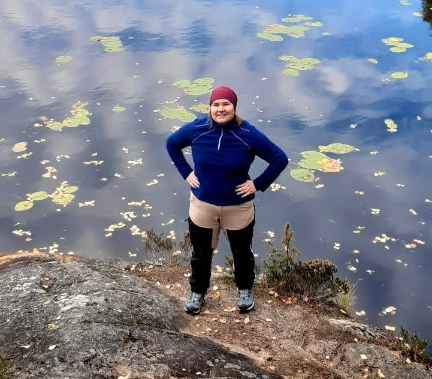

Kansallispuistot ovat suuria luonnonsuojelualueita, joiden tehtävänä on säilyttää luonnon monimuotoisuus ja tarjota vierailijoille mahdollisuus nauttia luonnosta. Kansallispuistojen tärkein tehtävä on turvata luonnon monimuotoisuus. Kansallisesti ja kansainvälisesti arvokkaat kansallispuistot on perustettu lailla valtion alueille. Jokainen puisto edustaa tyypillistä suomalaista luontoa parhaimmillaan, aina tuntureilta saaristoon asti. Metsähallitus vastaa kaikkien Suomen kansallispuistojen hoidosta. Reitit on suunniteltu ja ylläpidetty niin, että ne ohjaavat kävijöitä kulkemaan luonnolle ystävällisellä tavalla. Tämä auttaa säilyttämään näiden alueiden ainutlaatuisuuden myös tuleville sukupolville.

Asun Helsingissä Uudellamaalla. Minulla on monia harrastuksia.
Alla on jaottelu liikunta ja kulttuuriharrastuksistani
| Liikuntaharrastukset: | Kulttuuriharrastukset: |
|---|---|
| Jumppa | Kuorolaulu |
| Pyöräily | Teatteri |
| Hiihto | Baletti |